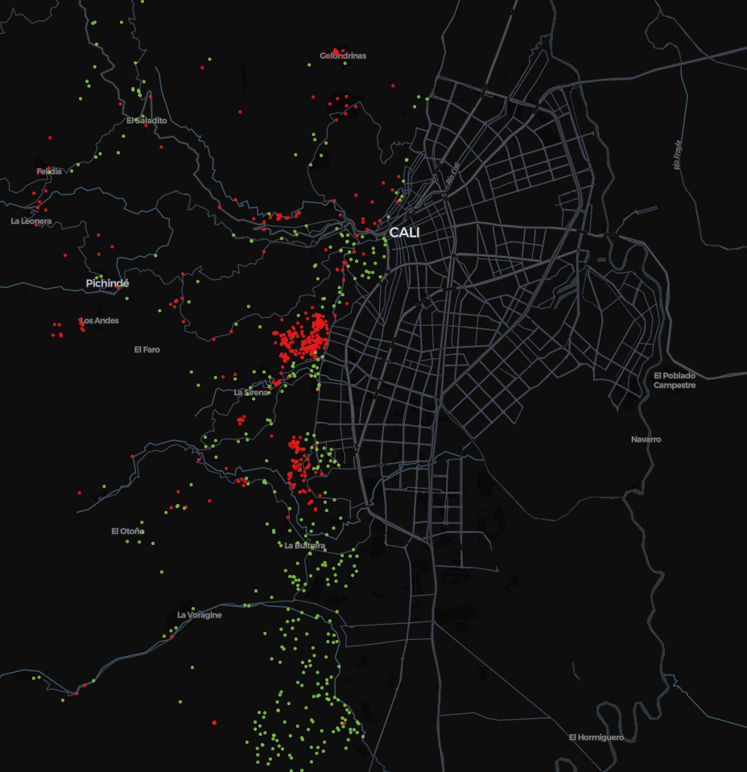
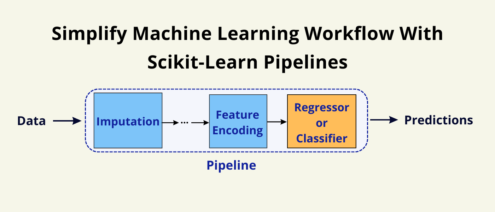
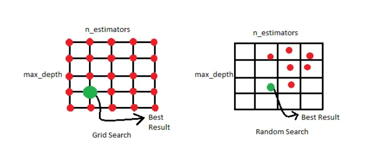

Contextualización de la Problemática#
Exploración de modelos de clasificación e implementación de calibración#
Introducción#
Se emprende un análisis exhaustivo de un problema de clasificación, comenzando con un enfoque sistemático para garantizar resultados robustos y confiables. El primer paso en este proceso es realizar un Análisis Exploratorio de Datos (EDA), que permitirá examinar la distribución de las variables en el conjunto de datos de entrenamiento. A través del EDA, se busca identificar patrones subyacentes, y cualquier irregularidad que pueda influir en el rendimiento de los modelos. Esta etapa es crucial, ya que una comprensión profunda de los datos es fundamental para tomar decisiones informadas en las siguientes fases del análisis.
Una vez extraídas las principales características del conjunto de datos, se procederá a explorar el rendimiento de cuatro modelos de clasificación de gran relevancia: Support Vector Machines (SVM), Random Forest Classifier, Gradient Boosting Trees y Regresión Logística. Cada uno de estos modelos posee sus propias fortalezas y debilidades, y el objetivo es evaluarlos en un entorno controlado para determinar cuál de ellos se adapta mejor al problema en cuestión. A través de la comparación de métricas clave como la precisión, la sensibilidad, la especificidad y el AUC-ROC, se buscará identificar el modelo que ofrezca el mejor equilibrio entre sesgo y varianza.
Además de evaluar el rendimiento base de estos modelos, un aspecto crucial del análisis será la calibración de probabilidades. Muchos modelos de clasificación, especialmente aquellos como SVM y Gradient Boosting Trees, pueden producir predicciones de probabilidad que no están perfectamente calibradas. Esto significa que la probabilidad predicha no siempre refleja adecuadamente la verdadera probabilidad de pertenencia a una clase. Por lo tanto, se examinará si los modelos necesitan un ajuste adicional a través de técnicas de calibración, como la regresión isotónica o el método de Platt, para mejorar la precisión de las probabilidades predichas.
Finalmente, el análisis concluirá con una comparación integral de los resultados obtenidos de los modelos, tanto antes como después de la calibración de probabilidades. El objetivo es identificar el modelo que no solo tenga un alto rendimiento en términos de precisión, sino que también ofrezca predicciones de probabilidad bien calibradas. Este enfoque detallado garantizará que el modelo seleccionado no solo sea el más preciso, sino también el más fiable para la toma de decisiones en la prediccion del riesgo de deslizamiento de tierra.
Objetivos#
Desarrollar un modelo de clasificación binaria para estimar las clases de deslizamientos de tierra positivas y negativas para un conjunto de datos de entrenamiento dado, mediante diferentes técnicas para mejorar rendimientos de los modelos con el fin de tener un insumo para la calibración de las probabilidades
Estimar el método de calibración a usar, por medio de exploración de diferentes métodos que se ajusten al comportamiento del modelo para estimar la probabilidad de deslizamiento de tierra dada las calcificaciones del modelo entrenado
Desplegar mapa geográfico de la ciudad de Cali para que pueda capturar por zonas geográficas las probabilidades de deslizamiento de tierras con el fin de tener una herramienta predictiva de anticipación
Datos#
Los deslizamientos de tierra (también llamados movimientos en masa o derrumbes) son los eventos de riesgo de mayor frecuencia e impacto en el territorio de Santiago de Cali. Estas situaciones tienen diferentes detonantes como la lluvia acumulada o intensa, intervención humana y sismos. El desarrollo de un Mecanismo de Anticipación o Alerta Temprana para este tipo de fenómeno es esencial para la preparación institucional y comunitaria con el objetivo de salvar vidas y bienes en el territorio.
La alcaldía de Cali, al integrarse con empresas expertas en desarrollo tecnológico y analítica, pretende levantar este requerimiento de un modelo predictor de deslizamiento de tierras. Junto con SATIC (Sistema de Alertas Tempranas Inteligentes y Comunitarias), las oficinas gestoras de la alcaldía y la empresa donde trabajo se han empezado en el desarrollo de este modelo.
El equipo de geólogos de SATIC, cuenta con los siguientes datos que recibe de diversas fuentes y que ya tienen catalogados como eventos de “Sí deslizamiento” y eventos de “No deslizamiento” dado su tiempo enfrentando este tipo de desastres. En el siguiente mapa de ejemplo, se muestran los datos donde por latitud y longitud se ubica cada putno de evento, los puntos rojos indican Sí deslizamiento y los verdes indican No deslizamiento.

Importamos los conjuntos de datos de entrenamiento con el que contamos, los cuales pasaron por un pre-procesamiento para tenerlos listos para la analítica. Estos son provenientes de los archivos Eventos_SI_MM.csv y Eventos_NO_MM.csv proporcionados por la oficina de SATIC de la alcaldía de Cali. Estos contienen datos sobre de precipitaciones en diferentes periodos de tiempo, algunas características del suelo y la categorización binaria si hubo un derrumbe o no
A continuación, podemos ver la biblioteca de datos de las variables iniciales a tomar en cuenta con su descripción, cabe resaltar que cada una de estas features está asociada a un punto geográfico visto en la imagen anterior
Variable |
Tipo de dato |
Descripción |
|---|---|---|
Elevacion |
Numérico |
Elevación del punto de movimiento en masa en metros sobre el nivel del mar (metros) |
Pendiente |
Numérico |
Pendiente del punto de movimiento en masa en porcentaje (%) |
Zonificacion |
Categórico |
Es un nivel de riesgo: Nombre de la clasificación de amenaza o riesgo del punto de movimiento en masa asignado por geólogos de la alcaldía de Cali basado en el historial de casos de deslizamientos de tierra en la ciudad |
Tipo_geologia |
Categórico |
Nombre de la unidad geológica asociada al punto de movimiento en masa |
Cobertura_Suelo |
Categórico |
Nombre de la cobertura de suelo Metodología Land Corine Escala 1:25000 |
24h |
Numérico |
Precipitación de lluvia acumulada en 24 horas en milímetros. Este dato proviene de estaciones medidoras de lluvia a través de la ciudad |
7d |
Numérico |
Precipitación de lluvia acumulada en 7 días en milímetros. Este dato proviene de estaciones medidoras de lluvia a través de la ciudad |
10d |
Numérico |
Precipitación de lluvia acumulada en 10 días en milímetros. Este dato proviene de estaciones medidoras de lluvia a través de la ciudad |
15d |
Numérico |
Precipitación de lluvia acumulada en 15 días en milímetros. Este dato proviene de estaciones medidoras de lluvia a través de la ciudad |
30d |
Numérico |
Precipitación de lluvia acumulada en 30 días en milímetros. Este dato proviene de estaciones medidoras de lluvia a través de la ciudad |
60d |
Numérico |
Precipitación de lluvia acumulada en 60 días en milímetros. Este dato proviene de estaciones medidoras de lluvia a través de la ciudad |
90d |
Numérico |
Precipitación de lluvia acumulada en 90 días en milímetros. Este dato proviene de estaciones medidoras de lluvia a través de la ciudad |
deslizamiento |
Binario |
Indica si hubo deslizamiento de tierra en el punto de movimiento en masa (1 ó 0) |
Así se ven las primeras 5 lineas de nuestra data limpia:
ELEVACION |
PENDIENT |
zonificacion |
Nomenclatura_del_Suelo |
tipo_geologia |
24h |
7d |
10d |
15d |
30d |
60d |
90d |
deslizamientos |
|---|---|---|---|---|---|---|---|---|---|---|---|---|
1085.033813 |
36.38882065 |
Riesgo alto |
Otras superficies artificiales sin construcción |
Formacion Volcanica |
20.0 |
33.0 |
38.0 |
254.0 |
477.0 |
773.0 |
872.0 |
1 |
1027.715698 |
25.13285637 |
Amenaza baja |
Bosque mixto denso bajo de tierra firme |
Formacion Jamundi |
13.0 |
17.0 |
17.0 |
51.0 |
65.0 |
118.0 |
252.0 |
0 |
1173.279907 |
14.10933781 |
Amenaza baja |
Pasto cultivado enmalezado |
Formacion Jamundi |
0.0 |
7.2 |
21.1 |
23.1 |
128.3 |
292.7 |
599.4 |
0 |
973.211731 |
12.89175129 |
Riesgo bajo |
Zonas urbanas continuas |
Cono aluvial rio Melendez |
0.0 |
17.9 |
22.3 |
41.1 |
70.2 |
249.0 |
363.0 |
0 |
1062.026245 |
9.081903458 |
Amenaza baja |
Bosque mixto fragmentado con pastos y cultivos |
Cono aluvial 1 rio Pance |
0.0 |
48.1 |
88.6 |
163.4 |
304.6 |
533.0 |
722.6 |
0 |
1184.547241 |
27.58821106 |
Riesgo bajo |
Zonas urbanas continuas |
Formacion Volcanica |
0.0 |
0.0 |
1.0 |
47.0 |
47.0 |
99.0 |
170.0 |
0 |
Metodología#
Modelos#
Dentro de los modelos de aprendizaje automático para problemas de clasificación, se ejecutarán pruebas de rendimiento para modelos de ensamble como lo son Random Forest y XGBoost, para modelos basados en el hiperplano como el SVM (support vector machines), y modelos de regresión para clasificación como lo es la regresión logística
Bosques Aleatorios (Random Forest)
XGBoost (Extreme Gradient Boosting Trees)
Rgresión Logística
Máquinas de Vectores de Soporte (SVM)
Esquema de entrenamiento#
Ahora, la idea es hacer una tubería de datos tal que cuando lleguen los datos nuevos a estimar, estos pasen por las mismas transformaciones por las que pasaron los datos de entrenamiento. Más precisamente hablando, pipeline en scikit-learn es una herramienta que te permite concatenar varios pasos de procesamiento de datos y modelado en un solo objeto. Esto facilita la construcción, entrenamiento y evaluación de modelos de aprendizaje automático, ya que puedes encapsular todo el flujo de trabajo en una única estructura.

De la misma manera, se busca optimizar las estimaciones y la calidad de los modelos, por lo que se usa la metodología de Grid search o búsqueda de malla para optimizar parámetros dentro de los modelos. Es una herramienta poderosa para optimizar los parámetros de un modelo de aprendizaje automático. Permite definir una cuadrícula de valores para diferentes parámetros del modelo y busca exhaustivamente la mejor combinación de estos parameros, a lo que se le llama hiperparametrizacion.
En términos más simples, el GridSearchCV realiza una búsqueda exhaustiva sobre una cuadrícula de valores especificados para los hiperparámetros de un estimador. Esto permite encontrar la combinación óptima de hiperparámetros que maximiza la precisión o cualquier otra métrica de evaluación definida.
La idea detrás del GridSearchCV es que, en lugar de ajustar manualmente los hiperparámetros del modelo y evaluar su rendimiento, el proceso se automatiza y se realiza de manera sistemática. Esto ahorra tiempo y esfuerzo, ya que el GridSearchCV evalúa todas las combinaciones posibles de los hiperparámetros dentro de la cuadrícula especificada y selecciona la mejor combinación según la métrica de evaluación especificada.

Tercero, se propone usar validación cruzada aleatoria y dividida. Esto con el proposito de no usar la clasica division unitaria de entrenamiento-pruba, ya que en este tipo de división el entrenamiento o aprendizaje, el modelo puede quedar sesgado debido a que al dividir aleatoriamente no sabemos con que proporción de los datos el modelo aprende, por ejemplo, al dividir una sola vez el conjunto de datos nos puede quedar que en el conjunto de test solo haya valores con el label de 0 (no deslizamiento en este caso) y en el entrenamiento solo existan registros del label 1 (deslizamientos), esto puede ocasionar que el modelo no aprenda de la manera más optima.
Con la validación cruzada aleatoria y dividida (shuffle-split), cada división (split) está compuesta de tanto train_size puntos (disyuntos) para el conjunto de entrenamiento y tantos test_size puntos (disjuntos) para el conjunto de prueba, se fijen inicialmente. Esta división se repite n veces, de forma aleatoria. Por ejemplo en la siguiente imagen, para la ejecución de 4 iteraciones de división de un conjunto de datos que consta de 50 puntos, con una fracción de conjunto de entrenamiento de 0.8 y una fracción de conjunto de prueba de 0.2 puntos cada uno. Esto no debe ser necesariamente igual a la fraccion completa, podemos usar un train_size de 0.5 y un test_size de 0.1, quiere decir que habrán puntos disyuntos que no tomara para entrenarse ni para testear.

Calibradores de probabilidad#
Por último, se busca indagar si a cada clasificador le es necesario la implementación de la calibración de probabilidades o no, la calibración de probabilidades se utiliza para ajustar las probabilidades predichas por un modelo de clasificación para que reflejen mejor las probabilidades reales observadas. En un problema de clasificación binaria, como lo es el actual, el modelo no solo estima qué clase es la más probable, sino también asgina una probabilidad asociada a dicha estimación.
Los clasificadores bien calibrados son aquellos en los que la salida del método predict_proba se puede interpretar directamente como un nivel de confianza. Por ejemplo, un clasificador bien calibrado (binario) debe clasificar las muestras de tal manera que, entre las muestras a las que asignó un valor de predict_proba cercano a, digamos 0.8, aproximadamente el 80% pertenezca efectivamente a la clase positiva, es decir, para que un clasificador probabilístico esté bien calibrado, la confianza asociada a cada predicción de clase debe reflejar la probabilidad real de que la etiqueta generada sea la correcta
Existen diferentes métodos o herramientas por los cuales se puede probar si un clasificador está bien calibrado. Primero se utiliza las “Calibration curves” o diagramas de fiabilidad, estos miden qué tan bien están calibradas las predicciones probabilísticas de un clasificador. Comparan las probabilidades predichas por un clasificador con las frecuencias observadas de los eventos reales.
En la siguiente gráfica de ejemplo, podemos ver el eje X (Mean predicted value) representa las probabilidades predichas por los modelos, va de 0 a 1, indicando la confianza con la que los modelos predicen la clase positiva. Respecto al eje Y (Fraction of positives) muestra la fracción de positivos reales, es decir, la proporción de veces que un evento predicho como probable en realidad ocurre en el conjunto de datos.
Todas las series serán comparadas con una línea que representa el caso de calibración perfecta. Si un modelo está perfectamente calibrado, los puntos de su curva se alinearán con esta diagonal, indicando que las probabilidades predichas coinciden con las frecuencias observadas de los eventos reales. Por ejemplo, una predicción de 0.6 significaría que en el 60% de los casos ese evento ocurre realmente. Entonces si nos enfocamos por ejemplo en el modelo de regresión logística (curva azul), la curva azul está bastante cerca de la línea de calibración perfecta. Esto indica que las probabilidades predichas por la regresión logística están bastante bien calibradas. Para cualquier probabilidad predicha, la fracción de positivos observados es similar, lo que significa que este modelo tiene buenas predicciones calibradas.

Este es el método que se utilizará para saber si un modelo de clasificación está bien calibrado o no.
Métodos para calibrar clasificadores#
Tabla de contenidos: